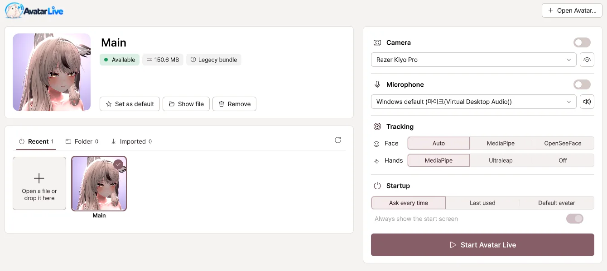
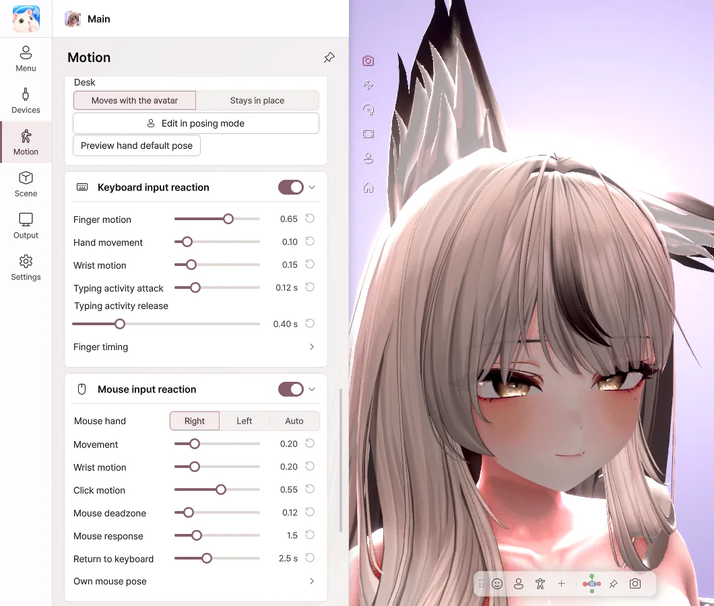
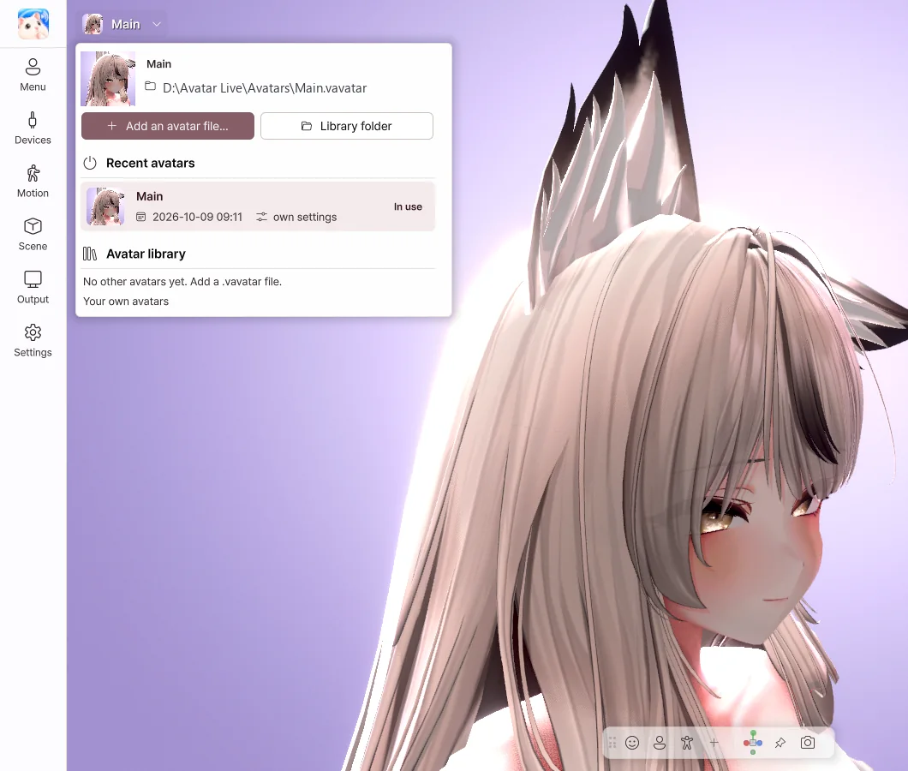
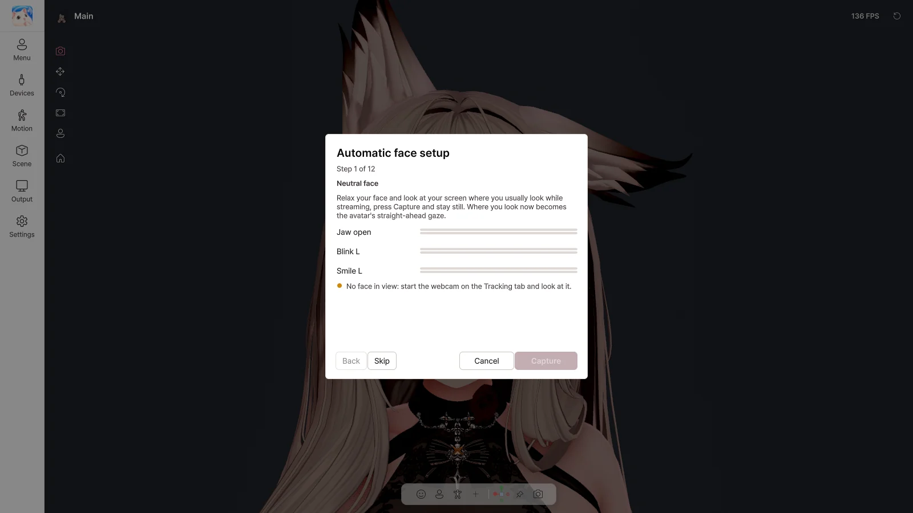
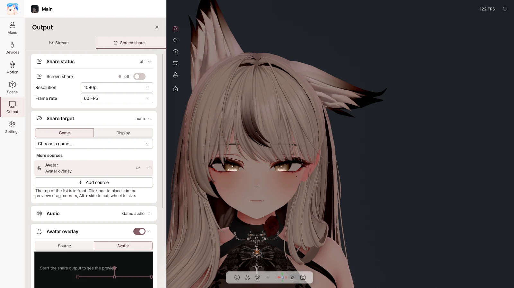

No VRM conversion
Export once from your avatar project and you're done. If you change the avatar, just export it again.
A Windows VTuber app for VRChat avatars
No VRM conversion, no complicated setup all over again.
Bring the avatar you know to your streams and screen shares.
Works right away with
Features
No need to rebuild anything. Everything built into your avatar moves just as it is.

Export once from your avatar project and you're done. If you change the avatar, just export it again.

Shows the shaders on your avatar, such as Poiyomi and lilToon, just as they are.
Swaying hair, outfit toggles, even expression buttons move with the same settings as in VRChat.
Expressions, gaze and even fingers with a single webcam. Uses your avatar's VRCFaceTracking setup as it is.

Even when your hands are out of view, the avatar's hands move with your typing and mouse. The characters you type are not recorded.
Send a transparent background to OBS, and the game and your avatar on one screen to Discord.
How it works
Open the Unity project (2022.3.22f1) of the avatar you upload to VRChat.
Create a .vavatar file with a single click in Curious Bobby - Avatar Exporter.
Open the file and turn on your webcam, and your avatar moves right away. From then on, you don't need Unity.
VRM or .vrca files alone can't be used. You need the avatar's Unity project. See the export guide
Take a look

Choose a recently used avatar, or drag and drop a file. Lighting and camera are remembered for each avatar.
Press the same menu you used in VRChat. Items you use often can become buttons or hotkeys.

Make the expressions as guided, and the tracking automatically adjusts to fit your face.

Grab hair or a tail with the mouse and pull, then pose it in exactly the shape you like.
Send a transparent background over Spout2, and appear on Discord · Zoom through the virtual camera.

Share the game screen with your avatar on top, without OBS. Your friends see the game and your avatar, and you see only the game.


Change the mood with a single preset, and add backgrounds and effects.
Comparison
Supported features may vary from program to program.
Editions
Basic and Pro are the same program. Your edition is set by the license you enter.
Personal use
¥1,990
Streaming · publishing videos · commercial use
¥3,980
Already using Basic? The Upgrade (¥1,990) on BOOTH turns it into Pro.
Prices are as shown on BOOTH. As this is a digital product, refunds are generally difficult after purchase, so please check the requirements before you buy. Refund Policy
FAQ
Yes. Export it with the Exporter from the Unity project you upload to VRChat, and the Expressions menu works just as in VRChat — right down to your outfit and accessory toggles. Shaders and PhysBones come along as they are.
You need it once, to create the avatar file (Unity 2022.3.22f1). After that, you use Avatar Live without Unity.
Not at the moment. Support for loading VRM files is planned.
Your avatar's own shaders are shown as they are. We have tested more than 200 shaders, including Poiyomi and lilToon.
Yes. Turn on screen share and choose 'Avatar Live Share Output' in Discord, and the game and your avatar are shared together.
Basic is the edition for personal use (including private Discord sharing with friends), and Pro is for streaming, publishing videos and commercial use. Pro offers 4K output, no watermark, posing and objects.
Only Windows 10 / 11 (64-bit) is supported.
Start right now with the VRChat avatar you know.